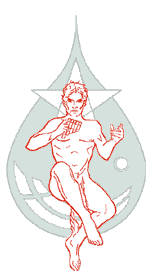
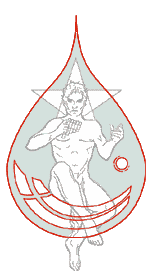
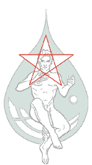

panlogos
panlogos ist ein Team von Beratern und Coaches, die durch eine gemeinsame Überzeugung, eine gemeinsame Aufgabe und durch die gemeinsame Entwicklung neuer Methoden miteinander verbunden sind.
Coach · Trainer · Autor
Schön, dass wir uns hier treffen! Wenn Ihnen Ihre Selbstentwicklung und ein gelingender Umgang mit anderen wichtig sind, sind Sie hier richtig.
Selbst-Entwicklung
Die Persönlichkeitsmuster des Enneagramms sind ein ideales Werkzeug, um uns selbst und auch unsere privaten oder beruflichen Beziehungen weiter zu entwickeln. Sie ermöglichen nicht nur, sich selbst und andere besser zu verstehen, sondern eröffnen konkrete Entwicklungswege.
Das Enneagramm beschreibt neun seelische Strukturen, die unsere Persönlichkeit von Geburt an prägen und unsere Eigenarten erklärbar machen. Als archetypische Muster sind sie allen Menschen gemeinsam.
Sich selbst im Muster wiedererkennen.
Mit dem Muster bewusst arbeiten.
Begleitung im Einzelprozess.
Über mich
Till Novotny ist geschäftsführender Gesellschafter der panlogos GmbH, die Unternehmen und Einzelne in der Erhaltung und Entfaltung ihrer lebendigen Kraft unterstützt. Dazu bedarf es einer Verbindung von Unternehmens- und Persönlichkeitsentwicklung.
Seine Grundlagen liegen in einem Management-Studium an der European Business School, diversen Weiterbildungen in humanistischer und systemischer Psychologie und mehr als drei Jahrzehnten Praxis als Berater, Trainer und Coach.
Veröffentlichungen rund um Führung, Strategie und Selbstwerdung. Eine kuratierte Auswahl finden Sie ausführlich im Bereich Panlogos → Wissen.
„Kühl sollte der Kopf und warm das Herz sein – nicht umgekehrt."
— Leitgedanke der Arbeit von Till Novotny
Dies ist ein Konzept-Prototyp. Für die echte Umsetzung stimmen wir Inhalte, Reihenfolge und Texte gemeinsam ab.
tn@panlogos.deAus panlogos · neu unter dem Namen Till Novotny
Über drei Jahrzehnte Arbeit an Philosophie, Führung, Kreativität und Wahrnehmung – hier vollständig übernommen und im neuen Gewand lesbar. Shop, Kurse und Backend bleiben bewusst außen vor.
panlogos ist ein Team von Beratern und Coaches, die durch eine gemeinsame Überzeugung, eine gemeinsame Aufgabe und durch die gemeinsame Entwicklung neuer Methoden miteinander verbunden sind.
Lebendigkeit bedeutet für uns, in ständiger Entwicklung und Veränderung mehr und mehr von dem zu realisieren, was wir sein könnten. In dem Maße, in dem uns das gelingt, erfüllen wir auch unsere Aufgabe im Zusammenwirken mit anderen. Der Lohn dafür sind Erfolg und ein gelingendes Leben.
panlogos ist auch ein Labor zur Entwicklung neuer Methoden und Ideen, um den individuellen und organisatorischen Wandel immer wirkungsvoller zu unterstützen. In dieser gemeinsamen Entwicklungsarbeit nutzen wir die Unterschiedlichkeit unseres Wissens und unserer Erfahrungen als besondere kreative Kraft.
Unsere gemeinsame Aufgabe besteht darin, Unternehmen, Teams und Einzelne in der Erhaltung und Förderung ihrer Lebendigkeit zu unterstützen. Darin wollen wir führend sein. Mit dieser Zielsetzung entwickeln wir mit unseren Kunden neue Strategien und Strukturen, trainieren Zusammenarbeit und begleiten sie bei individuellen Entwicklungsschritten. Wir liefern keine Lösungen, sondern sorgen dafür, daß unsere Kunden ihre eigenen Lösungen finden und begleiten sie dann solange, bis sie sich ihrer erweiterten Fähigkeiten sicher sein können.
Logos bedeutet im Griechischen zunächst "Wort". Unsere Arbeit besteht im Kern darin, Unternehmen, Teams und Einzelne dabei zu unterstützen, daß sie Zugang zu ihrer eigenen lebendigen Kraft finden. Dabei ist der professionelle Umgang mit dem Wort einer der wichtigsten Schlüssel.
Logos steht im Griechischen darüber hinaus auch für die grundlegende Kraft, aus der alles hervorgeht, und ihre Gesetzmäßigkeiten. Der erste Satz des Johannes Evangeliums lautet z.B.: "Im Anfang war das Wort." In diesem Sinne besteht unsere Arbeit darin, die wirksamen Prinzipien hinter der Lebendigkeit zu verstehen und für unsere Kunden nutzbar zu machen.
Das erfordert nach unserer Erfahrung eine stimmige Arbeit auf verschiedenen Ebenen, wie z.B. der strategischen Orientierung, einer vertieften Führungsarbeit und der Begleitung Einzelner in ihrer individuellen Entwicklung.
Für diesen umfassenden Blick steht in vielen Fällen - wie auch bei uns - die Vorsilbe "pan" (z.B. pan-amerikanisch). Wenn man dieses "pan" (kurzes a) wie "Pan" (langes a) ausspricht, dann wird daraus der griechische Gott Pan, der Lebendigkeit und Lebenskraft verkörpert und damit ein wichtiges Symbol unserer Arbeit darstellt.
Überall um uns herum fallen Grenzen, und gleichzeitig wächst die Geschwindigkeit der Veränderung. Beides gemeinsam führt zu erheblich größerer Komplexität, für die bisher bewährte Methoden kaum mehr ausreichen. In dieser Situation sind besonders Unternehmer und Führungskräfte als Vorbilder in Orientierungsfähigkeit und innerer Stabilität gefordert.
Konfrontiert mit der Gefahr, dabei den Anschluß zu verlieren, als Unternehmen vergleichbar und als Team oder Person überfordert zu werden, wächst oft der Gedanke, das Unternehmen, die Führungsarbeit und sich selbst wieder ganz neu auszurichten.
panlogos macht solche inneren "Neuanfänge" möglich.
Gemeinsame Wettbewerbskraft und individuelle Souveränität. Dabei schaffen unsere Methoden und die breite gemeinsame Erfahrung neue Blickwinkel, öffnen den Zugang zu anfangs verdecktem Wissen und ermöglichen immer wieder überraschende Einsichten.
Auf der persönlichen Ebene fördert unsere Arbeitsweise, die Denken, Fühlen und Handeln immer gemeinsam anspricht, außergewöhnliche Entwicklungskraft.
Unsere Kunden erleben deshalb, wie sie ausgehend von ihren eigenen Wurzeln neue Lösungen finden, und in der Veränderung begleitet werden, bis sie sich der erreichten Fortschritte sicher sein können.
Weil unsere Arbeit nicht allein in Fachwissen gründet, sondern vor allem in der gemeinsam veredelten Erfahrung aus jahrelanger Beratungs- und Führungsarbeit.
Weil wir in unserer Entwicklungsarbeit auch den aktuellen Forschungsstand einbeziehen und für unsere Kunden praktisch verfügbar machen.
Weil auch wir werden wollen, was wir sein könnten, und dabei die gewonnenen Erkenntnisse und Methoden an uns selbst verproben.
Unsere Methoden entsprechen, je nach Blickwinkel, entweder keiner Schule oder vielen Schulen. Sie sind nach den gemeinsamen Erfahrungen von uns entwickelt, oder ausgewählt und von uns weiterentwickelt worden - ohne daß wir uns dabei durch die Bindung an Lizenzen oder Schulen einschränken lassen.
In diesem Sinne schaffen wir unsere eigenen Orientierungsmodelle, Diagnoseinstrumente und Arbeitstechniken, um sie für unsere Kunden einzusetzen.
Unsere Orientierungsmodelle machen die gemeinsamen und langjährigen Erfahrungen zur Entwicklung von Unternehmen, Teams und Einzelnen anschaulich. Wie Landkarten geben sie einen Überblick zu Strategieentwicklung und -umsetzung, zur Führungsrolle und erfolgreicher Führungsarbeit, sowie zur Entwicklung von Persönlichkeit und Leistung. Sie finden sich im Bereich „Wissen/ Orientierungsmodelle“.
Unsere Diagnoseinstrumente beziehen sich auf Personen, Zusammenhänge und Wirkungen. Sie dienen der Klärung...
Unsere Arbeitstechniken sorgen für effektive Entwicklungsprozesse bei unseren Kunden. Sie dienen...
Unsere Kunden erleben unsere Arbeit und unsere Methoden in einem auf ihre individuelle Aufgabenstellung zugeschnittenen Zusammenhang. In vielen Anwendungsbeispielen aus unserer Praxis wird die erfolgssichernde Kombination aus strategisch wirtschaftlicher Beratung und persönlicher, auch seelischer Begleitung deutlich.
Die panlogos Partner können auf der Grundlage ihrer persönlichen Erfahrung diese Gebiete miteinander verbinden. Seit 1992 sind wir in dieser Weise tätig.
Ein Unternehmen liefert Software an Kunden, die diese in ihre eigenen Angebote integrieren. Unsicher war, wie stabil die Bedeutung des Unternehmens für Kunden und Endanwender ist und welche Gefährdungen in der näheren Zukunft bestehen. Gesucht war eine neue und kraftvolle Positionierung, die wirkungsvoll nach außen vertreten wird.
Zunächst wurden Tiefeninterviews mit ausgewählten Kunden aus beiden Ebenen durchgeführt. Die dabei entstehenden „kognitiven Landkarten“ waren der Ausgangspunkt für eine Reihe von Workshops zur Neupositionierung des eigenen Geschäfts. Im Anschluß daran wurden die Mitarbeiter in Marketing und Vertrieb darauf vorbereitet, diese Neupositionierung in ihrer Tätigkeit praktisch einzusetzen. Unsere Methode „Inneres Lernen“ sicherte eine schnelle Umsetzung in der täglichen Praxis.
Allein die Zeitersparnis aufgrund der mit wesentlich höherer Effektivität geführten Kundengespräche führte bereits nach weniger als zwei Jahren zu einer Finanzierung der Investition. Noch größer war der Wachstumseffekt durch neue, besser zugeschnittene Angebote. Am wertvollsten für das Unternehmen war aber die neue Wahrnehmung aus Kundensicht und die damit verbundene Sicherung der eigenen Position.
Ein Dienstleistungsunternehmen mit hochqualifizierten Mitarbeitern stellte eine Verschlechterung des Arbeitsklimas und steigende Fluktuation fest. Es ging darum, die Ursachen zu verstehen, die Führungskräfte darauf vorzubereiten, dieser Entwicklung eine positive Wendung zu geben und sie gleichzeitig in ihrer Persönlichkeit zu stärken.
Eine Reihe von Tiefeninterviews in den verschiedenen Führungsebenen führte schnell zu einer genauen Beschreibung der bisher von Mitarbeitern erlebten Führung. Das war die Basis, um in Workshops mit der Geschäftsleitung die gewünschte Veränderung und die dahinter stehenden Führungsprinzipien zu entwickeln. Dabei wurden die angestrebten Führungserlebnisse meßbar beschrieben. Aufbauend darauf entstand dann ein präzise zugeschnittenes dreistufiges Entwicklungsprogramm. Es beginnt mit der praktischen Vermittlung von Führungsinstrumenten, setzt sich fort mit Übungen zum wirkungsbewußten Umgang miteinander und endet mit Einzelarbeit zur Reflexion eigener Denk- und Verhaltensmuster.
Allein die Senkung der Fluktuation und die damit eingesparten Kosten finanzieren die Investition in weniger als einem Jahr. Noch wertvoller sind allerdings das gestiegene Vertrauen und die dadurch erhöhte Bereitschaft zum Wissensaustausch.
Ein Hersteller, der seine Produkte über Partner vertreibt, spürte wachsenden Preisdruck und eine Schwächung der eigenen Position gegenüber dem Handel. Die Aufgabe bestand darin, seine Position zu verstärken, ohne unnötige Konflikte mit den Handelspartnern zu provozieren.
Ausgehend von dem bisherigen Leistungsprogramm und vorhandenen Stärken wurde gemeinsam mit dem Führungsteam eine grundlegend neue Ausrichtung des Geschäfts entwickelt. Ein gleichzeitig anstehender Generationswechsel in der Geschäftsleitung konnte durch gezielte Begleitung achtungs- und wirkungsvoll stattfinden. Eine Reihe von Workshops zur Umsetzung sicherte dann die bei Führungskräften und Mitarbeitern notwendigen Umdenk- und Lernprozesse. Darüber hinaus wurde der neue Geschäftsführer in seiner persönlichen Rolle bei der Veränderung individuell begleitet und gestärkt. Schließlich fanden Workshops mit dem Führungsteam statt, um die für die Veränderung notwendige Führungssicherheit und den erforderlichen zeitlichen Freiraum zu erarbeiten.
Bereits wenige Monate nach der Neuausrichtung war die veränderte Außenwirkung des Unternehmens in Design und Arbeitsweise deutlich zu spüren. Mit dem neuen Selbstverständnis entstand Zugang zu ganz neuen Geschäftsfeldern und Vertriebswegen. Das nachhaltig wertvollste Ergebnis war jedoch der Aufbau einer den Handel einbeziehenden Markenwirkung bei Endkunden.
Über diese Projekte hinaus gibt es eine Fülle von weiteren Anwendungsbeispielen aus einzelnen Breichen:
Welche der beschriebenen Situationen spricht Sie an? Schon in einem kurzen Gespräch können neue und für Sie wertvolle Gedanken entstehen. Schreiben Sie uns eine Email oder rufen Sie uns an.
Wir kennen uns seit vielen Jahren, aber vor allem haben wir in dieser Zeit einen sehr offenen und intensiven Austausch in großer Themenbreite gepflegt, so daß eine fast familiär-freundschaftliche Verbindung entstanden ist.
Diese Verbundenheit erlaubt uns einen sehr geradlinigen, nicht-taktierenden Umgang miteinander und ermöglicht uns, auch sehr unterschiedliche Blickwinkel und Lebenserfahrungen komplementär, also ergänzend, zu verstehen.
Mehr zu Till Novotny
Mehr zu Ina Wiegels
Mehr zu Susanne Welsch-Lehmann
Für uns ist der zentrale Unterschied zwischen einem Unternehmen und einem virtuellen Unternehmen eine sehr unterschiedliche, im Grunde gegensätzliche, Verwendung des Gedankens der Synergie.
Wenn man Synergie als „Einsparung“ versteht, werden die Gemeinsamkeiten typischerweise in der folgenden Reihenfolge aufgebaut:
Das geht in dem Maße gut, in dem die Einsparungen deutlich größer als der Mehraufwand für Konfliktlösungen und Komplexität sind.
Wenn man Synergie als „gegenseitige Bereicherung“ versteht, führt das zu einer genau umgekehrten Reihenfolge:
Wir sind gesellschaftsrechtlich selbständig, was unsere Eigenständigkeit (die Fähigkeit selbst „stehen“ zu können) und damit die Möglichkeit, sich immer neu freiwillig zu verbinden, sichert.
panlogos ist ein Team von Beratern und Coaches, die durch eine gemeinsame Überzeugung, eine gemeinsame Aufgabe und durch die gemeinsame Entwicklung neuer Methoden miteinander verbunden sind.
Jeder einzelne Partner repräsentiert panlogos nach außen und steht mit seiner Person dafür ein, daß
Die Assoziierten arbeiten zusammen mit unseren Partnern bei Kunden und nehmen an unserem gemeinsamen Entwicklungsprozeß teil. Dadurch sind sowohl die von ihnen eingesetzten Methoden als auch ihre Haltung so stimmig, daß Außenstehende die nahtlose Integration immer wieder als überraschend erleben.
Gäste sind Personen, die aus dem Kreis unserer Partner vorgeschlagen werden und an unserem gemeinsamen Entwicklungsprozeß für einen begrenzten Zeitraum zum gegenseitigen Nutzen teilnehmen.
Kreativität ist trainierbar: Aus einer Auswahl von Wort- und Denkaufgaben werden Ihnen nach dem Zufallsprinzip nacheinander zwei Übungen gestellt. Alle Aufgaben haben gemeinsam, daß sie das Vermögen, eigene Denkmuster zu überwinden, schulen. Sie erhalten die Übungen paarweise, damit Sie nach je zwei Übungen vergleichen können, welche von den beiden die schwierigere war. Aus den Vergleichen aller bisherigen Teilnehmer ergibt sich so eine mit der Zeit immer aussagekräftigere Rangliste nach Schwierigkeitsgrad, zu der Sie selbst mit jedem Vergleich beitragen. Unter "zwei Übungen nach Schwierigkeitsgrad" sehen Sie die aktuelle Rangliste und können daraus wieder jeweils zwei Übungen auswählen (siehe Menüpunkte links).
Schon mit einem "Übungspaar" pro Woche fördern Sie Ihre Kreativität nachhaltig!
Wir wissen heute, daß Menschen - entgegen einer häufigen Annahme - bis ins hohe Alter flexibel und lernfähig bleiben können. Entscheidend dafür ist, daß wir unsere Sinne und unser Denken auf möglichst vielfältige und ungewöhnliche Weise aktiv halten. Die Kunst besteht darin - trotz aller Erfahrung und trotz allen Wissens - immer wieder neu wahrzunehmen und immer neu zu denken.
Die hier folgenden Wahrnehmungsübungen fördern diese Geistesgegenwart und Lebendigkeit gezielt.
Je mehr wir wissen, desto wichtiger wird es, daß wir unser Wahrnehmen und Denken in Bewegung halten. Inzwischen ist auch neurobiologisch nachgewiesen (z.B. nachzulesen bei Lawrence Katz: Neurobics - Fit im Kopf), daß wir auf diesem Weg unsere geistigen Fähigkeiten nicht nur erhalten, sondern sogar ständig erweitern können. Das erreichen Sie mit den folgenden 12 "Monatsübungen" bei minimalem Aufwand und während Ihres normalen Alltags. Halten Sie jeweils eine der Übungen etwa einen Monat lang bewußt in Ihrem Blickfeld, so daß sie mehrmals pro Woche daran denken, bewußt zu üben - der Online Coach DaySense unterstützt Sie wirkungsvoll dabei.
Blind sehen Versuchen Sie einmal, einige alltägliche Aktivitäten (bei denen das ungefährlich ist) mit geschlossenen Augen auszuführen. Sie könnten z.B. morgens blind duschen, sich blind ankleiden oder versuchen, ein Objekt mit geschlossenen Augen an seinem gewohnten Platz zu finden. Sie schärfen damit die anderen Sinne in ihrer Beobachtungsfähigkeit. Suchen Sie jeden Tag eine neue Übungsform!
Diesmal geht es darum, kleine alltägliche Dinge mit der ungewohnten Hand, also für Rechtshänder mit der linken Hand, zu tun. Fangen Sie gleich morgens mit dem Zähneputzen an und bevorzugen Sie kleine kurze Handgriffe - Sie müssen nicht gleich damit anfangen, mit der "falschen" Hand zu schreiben!
Notieren Sie täglich für einen Gebrauchsgegenstand aus Ihrer Umgebung mindestens 10 alternative Verwendungsmöglichkeiten. Was kann man z.B. alles mit einer Telefonkarte machen? Wir denken z.B. an Dinge wie "Türen öffnen", "Butterbrote schmieren" oder "wackelige Tische stabilisieren".
Nutzen Sie aktivitätsarme Zeiten, z.B. beim Warten auf die U-Bahn oder während Sie im Zug sitzen, um Ihre Augen zu schließen, auf die Sie umgebenden Geräusche zu lauschen und sich vorzustellen, was da gerade geschieht. Denken Sie auch bei dieser Übung an Ihre Sicherheit: wenn Sie aus einem Geräusch schließen, daß Sie gerade beraubt werden, dann machen Sie die Augen lieber wieder auf!
Moderne Zeiten Dieser Monat ist Ihrer Zeitroutine gewidmet! Machen Sie mehrmals pro Woche Dinge zu anderen Zeiten oder in einer anderen Reihenfolge, als es Ihrer Gewohnheit entspricht. Dafür gibt es im beruflichen wie im privaten Leben jede Menge Möglichkeiten - wenn Sie gleichzeitig darauf achten, mit Ihren Mitmenschen keinen Ärger zu bekommen: die Post mal zu einem anderen Zeitpunkt zu machen ist da schon besser als nicht zum gewohnten Zeitpunkt nach Hause zu kommen.
Versuchen Sie einmal, Ihre Umgebung so zu gestalten, daß sie immer wieder neue Sinneseindrücke erlaubt. Das könnte in Ihrem Privatbereich eine Änderung der Beleuchtung, neue Musik oder ein Duft sein. In Ihrem beruflichen Alltag wären ein interessanter Blumenstrauß, ein Bild oder ein kleines Kunstobjekt, das sich vielleicht auch noch gut anfühlt, erste Ideen dazu. Suchen Sie mindestens einmal pro Woche ein neues Element.
Besorgen Sie sich in einer Apotheke oder in einem Geschäft für Hörgeräte Ohrenstöpsel. Nutzen Sie kurze Pausenzeiten dafür, "nur zu schauen" und auf die fehlenden Geräusche zu schließen. Können Sie sich vorstellen, worüber gerade gesprochen wird, wenn Sie nur genau hinschauen?
Welche Dinge in Ihrem beruflichen oder privaten Umfeld lassen sich ohne Gefahr auf den Kopf stellen? Jeden Tag ein neues Objekt: Fotos, Uhren und ähnliches bieten sich an. Inzwischen sollten Sie die wichtigsten Personen Ihrer näheren Umgebung in Ihr geistiges Fitneßprogramm eingeweiht haben - nur damit die sich keine Gedanken machen!
Jetzt wird es etwas anstrengend! Bitte lesen, hören und sehen Sie in diesem Monat einmal gezielt etwas anderes als sonst. Vor allem geht es um Informationen, mit denen Sie eigentlich gar nichts zu tun haben wollen, weil Ihnen die ganze Linie gegen den Strich geht (soweit zur Anstrengung). Wenn Sie es schaffen, sich wenigstens für eine kurze Zeit darauf zu konzentrieren, dem "falschen" Gedankengang beobachtend zu folgen und von ihrem "falsch" zunächst abzusehen, machen Sie eine der wertvollsten Übungen für Ihre geistige Beweglichkeit.
Offene Sinne Nutzen Sie in diesem Monat kleine Spaziergänge in Ihrer gewohnten Umgebung, um dabei gezielt auf die Dinge zu achten, die Sie bisher noch nie bewußt wahrgenommen haben. Gemeint sind nicht nur sichtbare Objekte, sondern auch Geräusche, Gerüche, Tasterlebnisse oder bisher nicht wahrgenommene Vorgänge. Je besser Sie diese Übung ausführen, desto lebendiger und abenteuerreicher wird die Welt, in der Sie leben!
In der besinnlichen Zeit des November besteht eine gute Möglichkeit, sich möglichst viele Gewohnheitsmuster bewußt zu machen und - ohne Ihre Mitmenschen übermäßig zu belasten - einmal etwas anderes auszuprobieren. Vielleicht gibt es noch andere Routen, die Sie mit Ihrem Wagen zur Arbeit nehmen können; vielleicht können Sie beim Abendessen am Familientisch mal einen anderen Platz einnehmen. Freuen Sie sich auf wachsenden Ideenreichtum!
Unsere Denkmuster und Vorurteile sind deshalb so bindend, weil wir sie kaum bewußt wahrnehmen. Erst wenn wir "anecken" werden sie uns bewußt. Suchen Sie in diesem Monat möglichst viele Gelegenheiten, bei denen Ihre Vorurteile voraussichtlich irritiert werden und begegnen Sie diesen Situationen mit der bereits im September geübten Haltung. Nach einiger Zeit werden Sie erleben: hinter der Irritation liegt eine großes Feld der Bereicherung!
Die Übungen haben eine bewußt gewählte Reihenfolge (es ist aber ziemlich gleich, in welchem Monat Sie beginnen) und wenn Sie einen Zyklus beendet haben, dann fangen Sie einfach wieder von vorne an, oder machen einige der Übungen zu einer dauerhaften Gewohnheit, oder sie kommen im nächsten Mai auf die Idee, die Reihenfolge für dieses Mal zu ändern ... Viel Spaß an der neu gewonnenen Fitneß!
Die Geschichten in den panlogos Gedankensprüngen sind Hilfsmittel, um in vielen Alltagssituationen immer wieder neue Blickwinkel zu eröffnen. Finden Sie heraus, von welchen Sie sich eine Zeit lang begleiten lassen möchten!
"Als ich einmal in der Wüste war", erzählte Nasrudin eines Tages, "habe ich einen ganzen Stamm schrecklicher und blutrünstiger Beduinen zum Rennen gebracht." "Wie ist dir das denn gelungen?" "Ganz einfach! Ich bin weggerannt, und sie rannten hinter mir her."
Mulla Nasrudin ging auf einen Eselsmarkt. "Möchtest du Esel kaufen?" fragte ihn ein Händler. "Ja", sagte Nasrudin. "Wie wäre es mit einem dieser besonders schönen Tiere?" "Einen Augenblick", sagte der Mulla, "ich möchte, daß du mir die schlechtesten Esel, die du hast, vorführst." "Diese hier sind die schlechtesten." "Sehr gut! Dann nehme ich alle anderen."
An Markttagen stand Mulla Nasrudin häufig auf der Gasse und machte sich zum Narren: Sooft ihm Leute ein großes und ein kleines Geldstück anboten, nahm er jedesmal das kleinere. Eines Tages sagte ein wohlmeinender Mann zu ihm: "Mulla, du solltest die größere Münze nehmen. Dann wirst du mehr Geld besitzen, und die Leute haben nicht länger Gelegenheit, sich über dich lustig zu machen." "Das mag stimmen", sagte Nasrudin, "aber wenn ich stets die größere nehme, werden die Leute aufhören, mir Geld zu geben. Denn sie tun es ja nur, um zu beweisen, daß ich verrückter bin als sie. Und dann würde ich überhaupt kein Geld mehr haben."
Jemand beobachtete Nasrudin, wie dieser etwas auf dem Boden suchte. "Was hast du verloren, Nasrudin?" fragte er. "Meinen Schlüssel", sagte der Mulla. Beide lagen nun auf den Knien und suchten. Nach einer Weile fragte der andere: "Wo hast du ihn denn eigentlich verloren?" "In meinem Hause." "Aber warum suchst du ihn dann hier draußen?" "Weil es hier heller ist."
Wieder und wieder überquerte Nasrudin die Grenze zwischen Persien und Griechenland auf Eselsrücken. Jedesmal hatte er zwei Körbe mit Stroh dabei. Jedesmal untersuchte die Wache ihn wegen Schmuggelware. Niemals fand man etwas. "Was bringst du herüber?" "Ich bin ein Schmuggler." Jahre später, Nasrudin machte einen immer wohlhabenderen Eindruck, zog er nach Ägypten. Dort begegnete er einem der Grenzwächter. "Sag einmal, Nasrudin, jetzt, wo du außerhalb der Gerichtsbarkeit von Griechenland und Persien lebst, sage mir doch, was war es eigentlich, was du geschmuggelt hast, als wir dich nie überführen konnten." "Esel".
Zu Sokrates kam ein Mann und sagte: "Höre, ich muß dir etwas Wichtiges über deinen Freund erzählen!" "Warte ein wenig", unterbrach ihn der Weise, "hast du schon das, was du mir erzählen willst, durch die drei Siebe hindurchgehen lassen?" "Welche drei Siebe?" fragte dieser. "So höre: Das erste Sieb ist das der Wahrheit. Hast du dich von der Wahrheit der Sache vergewissert?" "Nein, ich habe es von anderen gehört", erwiderte der Mann. "Nun denn, das zweite Sieb ist das der Güte. Ist die Ursache dafür, daß du diese Nachricht weitergeben willst, einem gütigen Motiv deines Herzens entsprungen?" Der Mann mußte schweigen. "Das dritte Sieb schließlich ist das der Nützlichkeit. Glaubst du, daß diese Nachricht meinem Freund oder mir von Nutzen sein wird?" Der Mann drehte sich wortlos um und ging.
"Wenn die Menschen um etwas bitten, so gib es ihnen nie, ehe nicht mindestens ein Tag darüber hingegangen ist", sagte der Mulla. "Warum denn nicht?" "Die Erfahrung lehrt, daß sie nur dann etwas schätzen, wenn sie die Gelegenheit gehabt haben, daran zu zweifeln, ob sie es bekommen werden oder nicht."
Ein Mönch sagte zu Nasrudin: "Ich bin innerlich so frei und losgelöst, daß ich nie an mich selbst denke, nur an andere." Nasrudin antwortete: "Ich bin so objektiv, daß ich mich betrachten kann, als wäre ich eine andere Person; daher kann ich es mir auch leisten, an mich selbst zu denken."
Die Wahlen standen vor der Tür. Die Stadt hatte alle Kandidaten eingeladen, im Stadthaus vor den Bürgern zu sprechen. Als besondere Lokalberühmtheit war auch Nasrudin eingeladen, daran teilzunehmen. Nachdem alle drei Kandidaten gesprochen hatten, bestieg der Mulla das Podium und sagte: "Ich bin hergekommen, um euch mein eigenes besonderes Rezept anzubieten. Schreibt es auf und probiert es aus." Er fuhr fort und sagte, man müsse soundso viel Honig nehmen, dazu Knoblauch und Fisch, das müsse zusammen gekocht und dann verspeist werden. Eine ganze Reihe von Leuten probierte das Rezept aus. Es schmeckte fürchterlich. Einige stürmten das Haus des Nasrudin und wollten wissen, was es mit diesem Trick auf sich habe. "Gut", sagte Mulla Nasrudin, "ich habe nicht behauptet, daß es mir schmeckt, habe es tatsächlich auch nie versucht. Aber es schien mir eine so gute Idee zu sein, und ich wollte wissen, wie es wirkt. Eben das ist es doch, was Wahlkandidaten tun, nicht wahr?"
Ein bekannter Spaßmacher forderte Nasrudin im Teehaus heraus: "Die Leute sagen, du seist sehr gewitzt; aber ich wette hundert Goldstücke, daß du mich nicht hereinlegen kannst." "Doch, ich kann", sagte Nasrudin. "Warte hier einfach auf mich", sprach's und ging fort. Drei Stunden später wartete der Mann noch immer auf Nasrudin und seinen Trick. Schließlich mußte er zugeben, daß er hereingelegt worden war. Er ging zum Haus des Mulla und warf für die verlorene Wette einen Beutel mit Goldstücken durchs Fenster hinein. Nasrudin lag auf dem Bett und grübelte über seinem Trick. Er hörte das Klingeln der Münzen, fand den Beutel und zählte das Gold. "Gut", sagte er zu seiner Frau, "das gütige Schicksal hat mir etwas geschickt, womit ich meine Wette zahlen kann für den Fall, daß ich verliere. Nun muß ich nichts anderes mehr tun, als mir einen Trick einfallen lassen, mit dem ich den Spaßmacher hereinlegen kann, der mich sicherlich schon ungeduldig im Teehaus erwartet."
Nasrudin streute Hände voll Brotkrumen rings ums Haus. "Was machst du denn da?" fragte ihn jemand. "Die Tiger fernhalten." "Aber in dieser Gegend gibt es keine Tiger." "Ja, eben! Das Mittel wirkt, nicht wahr!"
Nasrudin begab sich ins Land der Narren. "O Leute", rief er, "die Sünde und das Böse sind hassenswert." Und so trieb er es jeden Tag, wochenlang. Als er eines Tages gerade wieder seine Rede halten wollte, stellte sich eine Gruppe der Bewohner des Narrenlandes mit verschränkten Armen vor ihm auf. "Was wollt ihr?" "Wir haben soeben einen Entschluß gefaßt, was wegen all der Sünde und des Bösen, von dem du die ganze Zeit sprichst, zu tun ist." "So habt ihr euch entschlossen, die Sünde hinfort zu meiden?" "Nein, wir haben beschlossen, dich zu meiden."
Eines Nachts, als Mulla Nasrudin eine einsame Straße entlangwanderte, sah er eine Schar Reiter, die ihm entgegenkam. Seine Phantasie begann zu arbeiten; er sah sich gefangen und als Sklave verkauft oder in die Armee gepreßt. Nasrudin nahm Reißaus, stieg über eine Mauer in einen Friedhof und legte sich in ein offenes Grab. Verdutzt über das merkwürdige Betragen, folgten ihm die Männer, ehrbare Reisende. Sie fanden ihn ausgestreckt daliegend, angstvoll und zitternd. "Was machst du da im Grab? Wir sahen, wie du davonliefst. Können wir dir behilflich sein?" "Daß ihr eine Frage stellen könnt, bedeutet nicht, daß es auch eine schlichte Antwort darauf gibt", sagte der Mulla, dem jetzt aufging, was geschehen war. "Es hängt alles von eurem Gesichtspunkt ab. Wenn ihr es aber denn wissen wollt: Ich bin hier wegen euch, und ihr seid hier wegen mir."
Lernen zielt darauf ab, bestimmte Dinge besser zu verstehen und auf dieser Grundlage wirkungsvoller denken und handeln zu können. Damit sind "lernen", "sich entwickeln" und "sich ändern" drei Aspekte desselben Vorgangs. Lernen ist etwas, das man nur selbst tun kann. Alles, was wir hören, sehen und erleben ist lediglich die Grundlage. Es nützt deshalb nichts, diese Informationen nur aufzusaugen - wir müssen sie danach in einem bewußten Lernprozeß erarbeiten, um sie selbständig einsetzen zu können.
Sich ändern heißt Widerstände überwinden. Der Prozeß
des "Inneren Lernens" führt deshalb beim Aufbau von Wissen und
Fähigkeiten gezielt über diese Widerstände hinweg.
Der Online
Coach DaySense ermöglicht Ihnen, die Methodik des Inneren Lernens
auch in Ihrem Alltag einzusetzen.
Lernen ist schwierig, wenn man nichts weiß! Unser Vorwissen bildet die "Haken", an denen wir Neues verankern. Nutze deshalb die Zeit vor dem Workshop / vor einer Lektüre für Gespräche und Gedanken zum Inhalt. Beantworte folgende Fragen (schriftlich!):
Gute Lehrbücher, Workshops usw. erzeugen Erlebnisse (durch Übungen, Beispiele, Gedankenexperimente) und bieten Modelle an, um diesen Erlebnissen Sinn zu geben, d.h. sie zu verstehen.
Hier beginnt der eigentliche Lernprozeß. Der erste Widerstand liegt dabei in bisherigen Denkmustern. Bemühe Dich um eine Haltung offenen Interesses: ich will nur übernehmen, was ich verstanden habe, aber nichts ablehnen, bevor ich verstanden habe. Wer doch vorschnell wertet („kenn ich schon!“) erfährt nichts Neues. Erst was man verstanden hat, kann man sinnvoll prüfen und ergänzen - und nur was man mit eigenen Worten einigermaßen vollständig wiederholen kann, hat man verstanden.
Der zweite Widerstand liegt in der (gefühlsmäßigen) Abwehr gegen Fremdes und den mit ihm verbundenen Irritationen des Selbstbildes. Erst durch eigene Assoziationen mit den Inhalten werden neue Gedanken zu eigenen Gedanken. Erst wenn man etwas in einem solchen „eigenen“ Zusammenhang verstanden hat, kann man sich dafür „erwärmen“, kommt auf konkrete eigene Aktionen zur Umsetzung und kann sich innerlich dafür entscheiden.
Der dritte Widerstand liegt in der notwendigen Willenskraft um die natürliche Trägheit der bisherigen Gewohnheiten zu überwinden. Erst die eben genannte innerliche Entscheidung gibt uns die Kraft, mit der konsequenten Übung zu beginnen. Der Online Coach DaySense begleitet die Transformation, damit aus alten Gewohnheiten frei einsetzbare neue Fähigkeiten werden können.
Alles, was wir in Workshops, Büchern, Vorträgen usw. finden, wird für uns (erst dann) verfügbar, wenn wir gezielt damit arbeiten. Deshalb sind gute Notizen ein Schlüssel für erfolgreiches Lernen.
Um Wissen erfolgreich nutzen zu können, ist es wichtig sich zunächst nur auf das Aufnehmen zu konzentrieren. Dabei hilft eine Haltung des offenen Interesses (ich will nur übernehmen, was ich verstanden habe, aber nichts ablehnen, bevor ich verstanden habe). Nur das, wofür man sich "erwärmt" und das man sich so aneignet, hat Bedeutung!
Wirkungsvolle Notizen bestehen aus Kernaussagen, die einen größeren Gedanken mit eigenen Worten zusammenfassen, und aus Strukturinformationen (Unterstreichungen, Kästen, Gliederungen), so daß der Fluß der Kernaussagen auch mit größerem zeitlichen Abstand nachvollziehbar bleibt.
Erst aus der Anwendung in der eigenen Praxis wachsen frei einsetzbare Fähigkeiten. Die panlogos Methode "Inneres Lernen" unterstützt die Weiterentwicklung der eigenen Notizen zu gezielten Aktionen. Der Online Coach DaySense hält diese Aktionen griffbereit und begleitet Sie bis bis zur Bildung neuer, guter Gewohnheiten.
Konsens in der Führungsarbeit setzt eine Einigung über die Bedeutung von Schlüsselbegriffen voraus. Die folgenden Seiten enthalten deshalb die etwa zweihundert wichtigsten in den Workshops verwendeten Definitionen und Erläuterungen. Um Ihnen das „Stöbern“ zu erleichtern, sind Worte, für die Sie eine eigene Definition finden, fett gedruckt. Zusätzlich finden Sie Hinweise auf verwandte Begriffe ( vgl.: ) und Gegensätze ( ggs.: ).
Die Definitionen beanspruchen natürlich keine Wahrheit. Sie haben sich jedoch im Rahmen unserer Workshops als praktisch erwiesen, um Klarheit und Verantwortung in der Führungsarbeit zu unterstützen. In diesem Sinne sind sie eine Aufforderung zum (rekapitulierenden) Nach-denken, zum (reflektierenden) Be-denken und zum (produzierenden) Weiter-denken.
Die Zahl der ständig neu erscheinenden Bücher ist viel größer als das, was wir sinnvoll verarbeiten können, selbst wenn man sich auf wenige Themen konzentriert. Wir haben uns zur Aufgabe gemacht, möglichst wertvolle "Goldstücke" für Sie zu finden. Eine kurze Beschreibung erklärt jeweils, warum diese Bücher so wertvoll für Sie sein können. Darunter sind auch echte Klassiker, die über viele Jahre hinweg ihren Wert behalten haben. Schon die regelmäßige Lektüre der Beschreibungen kann Ihnen helfen, "am Leben" zu bleiben.
Der goldene Schnitt ist ein Maßverhältnis, das vor allem in lebendigen Formen der Natur immer wieder auftaucht, z.B. im Verhältnis der Körperlänge oberhalb und unterhalb des Nabels, im Längenverhältnis der Fingerglieder, aber auch in vielen Blattformen und Schneckenhäusern. Wir empfinden so aufgebaute Formen als natürlich harmonisch und schön, auch in Kunst und Architektur. Unser Leitspruch lautet „Organisationen brauchen Lebendigkeit“, und deshalb sind auch diese Internetseiten nach den Prinzipien des goldenen Schnitts aufgebaut. In den folgenden drei sich schrittweise aufbauenden Zeichnungen können Sie erleben
Die Präsentation der Zeichnungen nutzt den Flash-Player 3.0. Falls der auf Ihrem Rechner noch nicht installiert ist, können Sie ihn sich auf der Seite www.macromedia.com unter Downloads herunterladen.
Logos bedeutet im Griechischen zunächst "Wort". Unsere Arbeit besteht im Kern darin, Unternehmen dabei zu unterstützen, daß sie Zugang zu ihrer eigenen lebendigen Kraft finden. Dabei ist der professionelle Umgang mit dem Wort einer der wichtigsten Schlüssel.
Logos steht im Griechischen darüber hinaus auch für die Gesetzmäßigkeiten und die grundlegende Kraft, aus der alles hervorgeht, z.B. im ersten Satz des Johannes Evangeliums: "Im Anfang war das Wort." In diesem Sinne besteht unser wichtigstes Anliegen darin, die wirksamen Prinzipien hinter der Lebendigkeit von Unternehmen und Organisationen zu verstehen und für unsere Kunden nutzbar zu machen.
Das erfordert nach unserer Erfahrung eine in sich stimmige Arbeit auf verschiedenen Ebenen, wie z.B. der strategischen Orientierung, der gezielten Erweiterung der Konfliktfähigkeit oder der Begleitung einzelner in ihrer persönlichen Entwicklung.
Für diesen umfassenden Blick steht in vielen Fällen - wie auch bei uns - die Vorsilbe "pan" (z.B. pan-amerikanisch); und wenn man das "pan" (kurzes a) wie "Pan" (langes a) ausspricht, dann wird daraus der lebendigste der griechischen Götter und damit ein weiteres Symbol unserer Arbeit.

Unter den Göttern der griechischen Mythologie ist Pan mit Abstand der lebendigste. Manchen ist Pan sogar so lebendig, daß sie nicht umhin kommen, ihn etwas zu verteufeln. Er verkörpert aber die grundlegende Wachstumskraft der Natur und ist damit ein ganz unmittelbares Symbol für Lebendigkeit.

Ein Grundsymbol für Lebendigkeit ist fließendes Wasser. Von Heraklit gibt es den berühmten Satz: "Man kann nie zweimal in denselben Fluß steigen." Entsprechend besteht Lebendigkeit darin, in ständiger Entwicklung und Veränderung mehr und mehr von dem zu realisieren, was wir sein könnten.

Überall dort, wo Menschen über einen tieferen Sinn von Zahlen nachgedacht haben, ist die Zahl 5 mit Wachstum und Lebendigkeit verbunden. Im Mittelalter existierte beispielsweise die Vorstellung, daß die Welt aus vier Elementen zusammengesetzt sei (Feuer, Erde, Wasser, Luft). Bald stellte sich die Frage, was dann die belebte Materie (Pflanzen, Tiere, Menschen) vom Rest der Welt unterscheiden könnte.
Gesucht war damit genau das Fünfte Element (die quinta essentia oder auch Quintessenz), die das Leben trägt. Ein Symbol für die Lebendigkeit war daher das Pentagramm oder der Fünfstern.
In ihm findet sich auch ein für lebendige Formen typisches Maßverhältnis wieder: der goldene Schnitt.
Name Till Novotny
Studium European Business School
Hobbies Skifahren und Laufen in den Bergen, Reisen und vor allem Lesen
Leitgedanken
Der Mut verantwortungsbewußter Freiheit und das Mitgefühl eines
offenen Herzens sind das, was uns heute am meisten voranbringt.
Webseiten www.tillnovotny.de, www.panlogos.de, www.DaySense.de
Humanistische und systemische Psychologie
verschiedene Aus- und Weiterbildungen seit 1980
European Business School
Frankfurt / Paris / London, Business Administration, 1979
Humanistisches Gymnasium
Leibniz Gymnasium, Offenbach, Abitur 1974
panlogos GmbH / Geschäftsführender Gesellschafter
Juni 1992 - heute
seit 2016 panlogos crew training
seit 2015 DaySense Self-Tracking
seit 2014 DaySense Führungstool
seit 2012 DaySense für iPhone und iPad
seit 2009 panlogos Talent Manager
seit 2005 Internet Coach DaySense
seit 2002 Familien- und Organisationsaufstellungen
seit 2001 Arbeit mit Persönlichkeitsmustern
seit 1998 Persönlichkeitsorientiertes Coaching
seit 1992 Strategieentwicklung und Führungstrainings
Michael Löhner Management Partner AG / Geschäftsführender Gesellschafter
Januar 1990 - Mai 1992
Trainer und Berater für
- strategische Unternehmensentwicklung
- Führungskonzepte
- Teamentwicklung für Führungsteams
MAN Roland Druckmaschinen AG / Bereichsleiter Controlling / Informationsverarbeitung
Juli 1987 - Dezember 1989
strategische / operative Planung und Controlling
Informationsverarbeitung
Organisation
Mitglied der Geschäftsleitung mit Gesamtprokura
nebenberuflich selbständig als Unternehmenscoach
März 1983 - Dezember 1989
Entwicklung von
- Planungs- und Controlling-Systemen
- strategischen Unternehmenskonzepten
- Unternehmens- und Führungsphilosophien
(ab 1988 Zusammenarbeit mit Pater Rupert Lay)
MAN Roland Druckmaschinen AG / Leiter Planung / Controlling
Oktober 1979 - Juni 1987
ab 1985 Leiter der Hauptabteilung
strategische / operative Planung und Controlling
Verantwortung für Personal Computing
ab 1979 Leiter der Abteilung
operative Planung / Controlling
wie ich geworden bin, was ich heute bin
Vieles und viele haben zu dem beigetragen, was ich heute bin, und verdienen meinen Dank. Ein wenig davon will ich hier nennen:
wie ich meine Arbeit verstehe
Für Unternehmen, Teams und jeden einzelnen Menschen ist das Wissen um ihre Individualität und Größe der Ausgangspunkt, um ihre eigene Aufgabe finden. Wir haben unsere Gaben und Begabungen damit wir sie einsetzen, wo immer sie gebraucht werden. Sie sind die Grundlage, sowohl für den Erfolg von Unternehmen, als auch für ein sinnerfülltes Leben der Menschen.
Ausgehend davon bedeutet Lebendigkeit die Fähigkeit, sich in ständiger Entwicklung dem Leben und seinen Forderungen zu stellen. Beispielhaft kann man bei Menschen, die sich einem schweren Schicksal stellen und ihm innerlich zustimmen, erleben, welche Kraft daraus entsteht, und wie auch andere dadurch ermutigt werden.
In diesem Sinne verstehe ich meine Aufgabe als Lebenshilfe, die Organisationen und Einzelne darin unterstützt ihre eigene Kraft zu finden und sie effektiv einzusetzen.
wie meine Arbeit praktisch aussieht
Im Kern ist meine Arbeit Coaching im Sinne einer Begleitung von Unternehmen, Führungsteams und einzelne Menschen, die werden wollen, was sie sein könnten.
Meist geht es in meiner Arbeit um komplexe oder sehr individuelle Fragestellungen, die strategisch wirtschaftliche Aspekte mit sozialen und seelischen verbinden. Davon ausgehend finde ich mit meinen Kunden neue Unternehmensstrategien, gestalte Führungssysteme, coache Führungsteams in der Erweiterung ihrer Fähigkeiten und begleite Einzelne in ihrer Entwicklung.
Grundlagen dafür sind meine langjährige Führungsverantwortung für große Unternehmensbereiche, eine umfangreiche praktische Erfahrung in der Umsetzung strategischer Veränderungen und die in vielen eigenen Entwicklungsschritten entstandene Fähigkeit, andere mit Klarheit und Einfühlungsvermögen zu begleiten.
Neben den Strategieklausuren, Führungsworkshops und Coachings für Unternehmen bieten unsere offenen Seminare die Gelegenheit, hohe und bewährte Qualität auch für Einzelne oder für sich persönlich zu nutzen. Termine und Buchungsmöglichkeiten dazu finden Sie hier. Für individuelle Einzellösungen erreichen Sie uns unter dem Punkt "Kontakt" oben rechts.
Den Onlinekurs Persönlichkeitsmuster finden Sie unter www.tillnovotny.de
Wie auf der neuen Seite
Menschen und Häuser, mit denen Till Novotny zusammenarbeitet. Diese Links führen zu den jeweils eigenen Websites (extern, mit ↗ markiert).